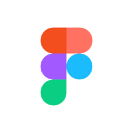
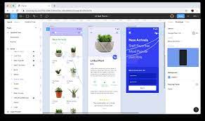

今回は「UIフレームワーク+Figma」を扱う
UIフレームワークとFigmaを用いたwebページ制作はモダンな開発であり、簡単に素早く実装することができる。
今回はUIフレームワークとしてMUIを用いる。
MUIはドキュメントを通して、ドキュメントの読む大切さも学ぼう

React.jsはUIパーツを構築するための「JavaScriptライブラリ」であったが、UIフレームワークを用いることによって、React.jsの枠組みに則りながらも高品質なUIを簡単に実装することができる。
UIフレームワークはCSSの知識を追求しないが、拡張する際には必要になるので、頼りっぱなしにならないように気をつけよう
React.jsで使われるUIフレームワークは多数あるが、今回は「MUI」を用いる。
MUIはGoogleのMaterial Design UIをReactで表現するUIフレームワークです
MUIはnpmを用いてインストールすることができる。
SPSS2022/day7にcdしておこう
$ npm install @mui/material @emotion/react @emotion/styledMUIはドキュメントがわかりやすいのでまず困ったら見てみよう。
実装例は後述する。
ブラウザ上で共同編集もできるデザインツールである。

Figmaを使うと簡単にデザインすることができる
figmaにアクセスし、サインアップをしよう
サインアップしたら以下のボタンをクリック
このような画面に遷移したらOK
参考: https://storage.googleapis.com/zenn-user-upload/33metjvpcqy421s2tpar3rczst6r
これらを使いデザインする。が今回はMUIを使う関係上もっと良い方法を用いる。
Figmaは有志の方が作成したFigmaのライブラリがある。
今回はMUIのUIをfigmaで表現するライブラリを使う。
MUI for Figma v5.9.0(Community)にアクセス
を押すと、figmaのファイルが開かれます。
と書いてある。
今回は2の手順を使ってみる
左側の「レイヤー」タブにさまざまなコンポーネントがあるので、今回はその中から「App Bar」を選択しよう
App Barに表示されている、これらがコンポーネントになっている。
右クリックでコピーを選択する(コピーのショートカットでもOK)
あとは貼り付けるだけで使える。
先のFigmaで用いた「App Bar」はもちろんMUIにある。
MUIを開いて、ハンバーガーメニューのコンポーネントをみると「App Bar」があるのでクリックする。
目的のApp BarのUIを探すとソースコードがある。
しかし、一部しか表示されていないので
をクリックして
このコードをコピペすることで実装することができる。
実際にSPSS2022/day7/src/App.jsにペーストしてみよう
import * as React from 'react';
import AppBar from '@mui/material/AppBar';
import Box from '@mui/material/Box';
import Toolbar from '@mui/material/Toolbar';
import Typography from '@mui/material/Typography';
import IconButton from '@mui/material/IconButton';
import MenuIcon from '@mui/icons-material/Menu';
export default function DenseAppBar() {
return (
<Box sx={{ flexGrow: 1 }}>
<AppBar position="static">
<Toolbar variant="dense">
<IconButton edge="start" color="inherit" aria-label="menu" sx={{ mr: 2 }}>
<MenuIcon />
</IconButton>
<Typography variant="h6" color="inherit" component="div">
Photos
</Typography>
</Toolbar>
</AppBar>
</Box>
);
}SPSS2022/day7/src/index.jsも修正しておこう
import React from 'react';
import ReactDOM from 'react-dom/client';
import './index.css';
import App from './App';
import reportWebVitals from './reportWebVitals';
const root = ReactDOM.createRoot(document.getElementById('root'));
root.render(
<React.StrictMode>
<App />
</React.StrictMode>
);
// If you want to start measuring performance in your app, pass a function
// to log results (for example: reportWebVitals(console.log))
// or send to an analytics endpoint. Learn more: https://bit.ly/CRA-vitals
reportWebVitals();
Photos
</Typography>
</Toolbar>
</AppBar>
</Box>
);
}SPSS2022/day7上でnpm run startしよう
localhost:3000をみてみると
どうやら @mui/icons-materialをインストールする必要があるらしいが、レガシーコードらしいので、MenuIconを消そう
※レガシーというよりmui/icons-materialがバージョンアップされていないの方が正しいかも
import * as React from 'react';
import AppBar from '@mui/material/AppBar';
import Box from '@mui/material/Box';
import Toolbar from '@mui/material/Toolbar';
import Typography from '@mui/material/Typography';
import IconButton from '@mui/material/IconButton';
export default function DenseAppBar() {
return (
<Box sx={{ flexGrow: 1 }}>
<AppBar position="static">
<Toolbar variant="dense">
<IconButton edge="start" color="inherit" aria-label="menu" sx={{ mr: 2 }}>
</IconButton>
<Typography variant="h6" color="inherit" component="div">
Photos
</Typography>
</Toolbar>
</AppBar>
</Box>
);
}もう一度npm run start した後localhost:3000をみてみると
実装できていることを確認しよう
Figmaで自由にデザインして、MUIを用いて実装しなさい。
day7のフォルダを活用しよう
完成したらpushしよう
今回はMUIとFigmaを用いてよりモダンなフロントエンド開発を行った。
Figmaを用いたUI設計をすることで無駄な実装や、チームでのデザインの齟齬が減る
また、MUIのようなUIフレームワークを用いることでCSSの知識が乏しくても高品質なUIを作成することができる。
総じて、フロントエンド開発では使うユーザを意識することを心がけよう。
次回は「デプロイ」について学び、HTMLファイルを公開しよう。
https://aruminium.github.io/SPSS2022/にReact.js+MUIでwebページを制作してみた
勢いで実装したので汚いがソースコードはこちらから見れる。
改善したいので、よろしければPull requestsを送ってくださると幸いです。